01 / 10Lust At First Eyes
"Anniku dhaan therinjuchu... naan evalo love panren nu."
Two weeks of talking led to one nervous evening — new shirt, a bus stop, and me calling her twice just to check which bus she'd be on. Then she stepped down in a simple white dress, and something in me just clicked. Our scooter broke down twenty-five minutes before the movie, so the letter and bouquet I'd saved for the beach got handed over right there on the road instead. Later that night, over tea and cigarettes on a borrowed bike, I thought she'd just be another person I'd cross paths with. Then she called. And everything changed.
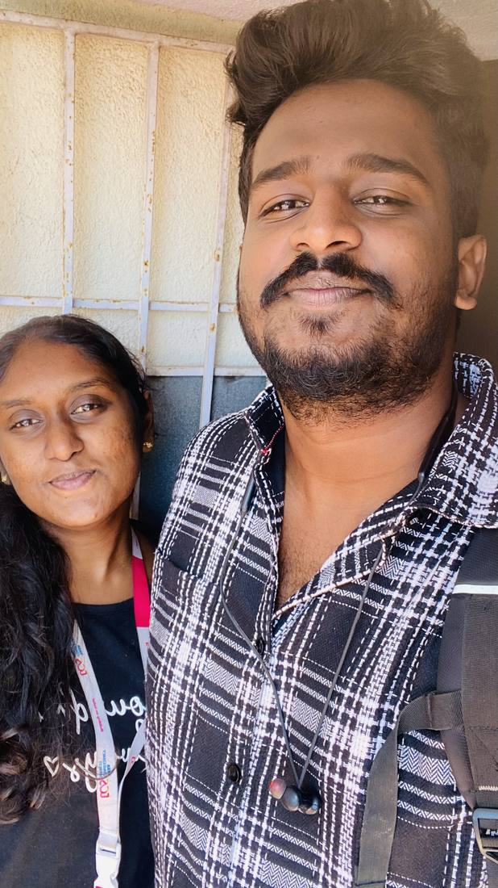
>02 / 10Turn Around In Travel
"Konjam konjama... ellam rasichom."
An unplanned three-day trip took us far from home, and I promised myself I'd behave. That lasted about a day. Every morning before work I'd kiss her forehead — something so small that felt entirely new. My attempts at finding her good food mostly failed, but she never once complained. On the way back, she wrapped her arms around me from behind, and I felt something settle in my chest that hadn't been there before.
Weekends became a ritual after that. Her first time at my place — a room with a leaky ceiling fan and too few mosquito nets, and somehow still one of my favourite memories. I cooked biryani for her once and got it right. She surprised me by visiting hers. It was never really about the space we shared — it was about how much closer we kept getting, one Sunday at a time. Then came the fights: small ones, big ones, a "five-minute rule" we made just so neither of us would walk away angry. We even planned a whole Diwali together, a week in advance. It didn't go as planned. Nothing about us ever really did — and somehow, that became the whole point.
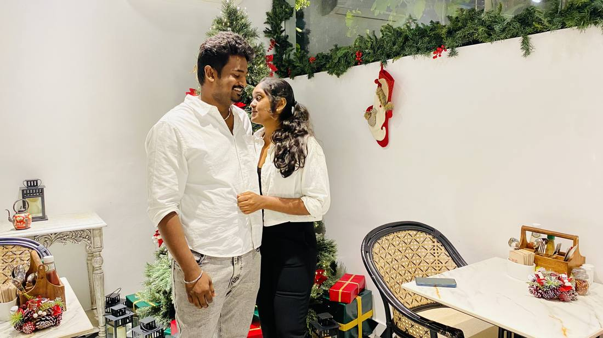
>03 / 10Mumbai Diaries & A Coldplay Sky
"Avaloda face... avaloda happiness... adhu dhaan enakku concert."
It was meant to be her trip with her sister's friends — a Coldplay concert I'd never even heard of. When the plan fell apart last minute, I said "vaa polaam" without thinking twice about the money. So the two of us took off on a 1,500 km train journey instead — long conversations by the door, her hand in mine, hours disappearing without us noticing.
I went in not knowing a single Coldplay song. Then the lights came up, the music started, and I realised the concert I actually came for was her face — lit up, unguarded, happy in a way I wanted to keep seeing for the rest of my life. English breakfast the next morning, Marine Drive in the evening, and her first-ever flight home — window seat, looking out like a kid seeing the world for the first time. I remember thinking: everything's going so well right now. I didn't know yet how much that sentence would come to mean.
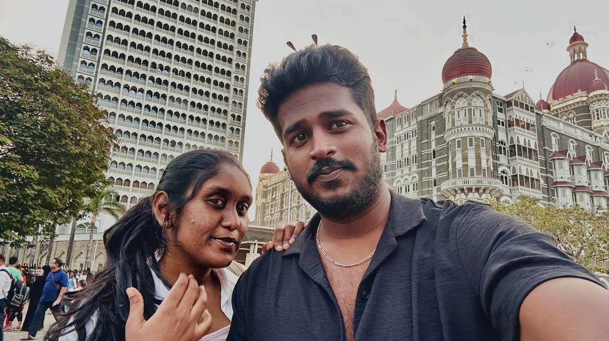
>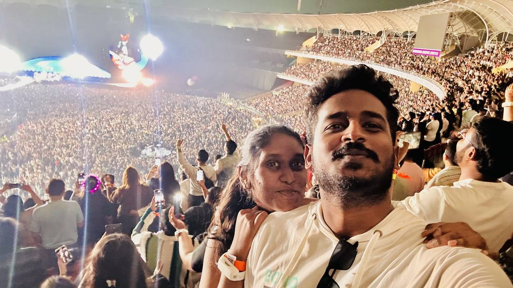
>04 / 10Pogalama Illaiya — Should I Go
"Idha accept panna... naan avala vitu poganumaa?"
An interview call from my dad turned into "let's make it a trip instead." Neither of us thought I'd actually get selected — around 200 people showed up. But I did. Good salary, accommodation, everything sorted. And one question I couldn't shake: if I take this, do I have to leave her?
The fear of telling her sat heavier than the fear of the job itself. But the second she looked at me, before I'd even said a word, I already knew my answer. I told my parents the salary wasn't enough. They said "then don't take it," and just like that, it was decided. She smiled — and that smile meant more to me than any offer letter ever could. We celebrated with an overhyped mango milkshake and a quiet cafe that night, talking until we lost track of time. Her birthday came a week later, and I got to spend it exactly where I wanted to be — next to her.
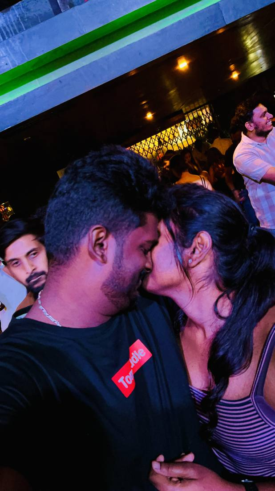
>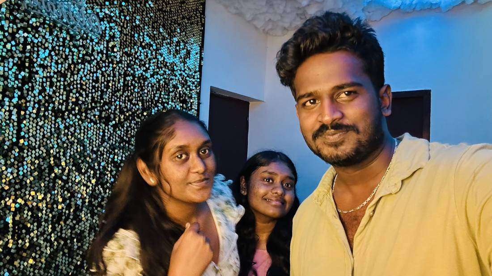
>05 / 10The Distance That Chose Us
"Naan evalo thooram ponaalum... naan unaku dhaan."
A message from someone I barely knew asking if I was "still looking for a job in Saudi" landed on the one day I couldn't ignore it — bills piling up, no company in Chennai offering enough. I asked her what to do. She went quiet for a moment, and then she gave me the "po" — the green light. There was pride in that smile, and underneath it, something else she never said out loud. I noticed anyway.
The visa process took us further north than either of us had been — Chennai to Bhopal to Lucknow to Dehradun, a route we mapped out ourselves so she could come along instead of my father. Somewhere between the lakes of Bhopal and a masjid she couldn't enter, my phone rang mid-interview: my dad had found out who I was really travelling with. An hour of pure dread — and then, somehow, it resolved itself into forgiveness. We rented a Royal Enfield in Dehradun and rode straight into Mussoorie's heavy rain and fog, not seeing two feet ahead and not caring at all. On the flight home, she fell asleep on my shoulder, and I remember wishing that flight would just never land.
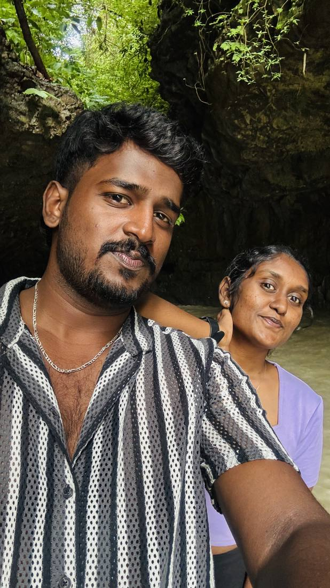
>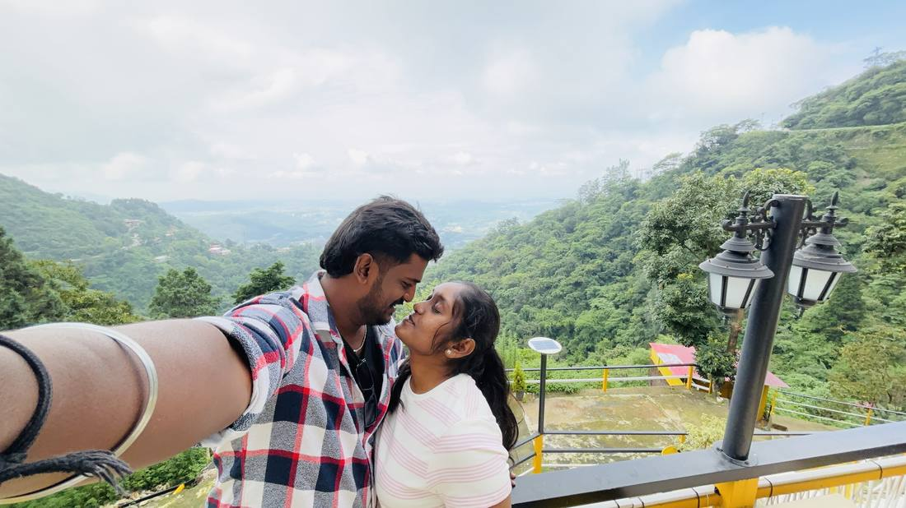
>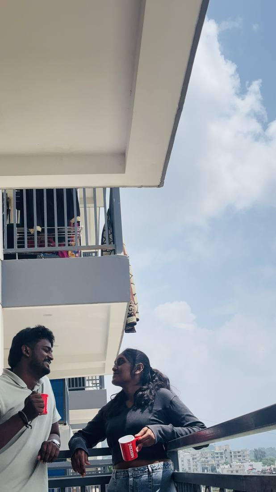
>06 / 10Borrowed Days
"Life oda best phase."
Once the visa was moving, I resigned. What followed was almost a full month with nothing to do but be with her — and we made sure not to waste a single day of it. We wandered Chennai without a plan, ended up at the beach for no reason at all, ate whatever looked good, laughed at nothing in particular. Knowing the clock was running only made the ordinary days feel bigger. Every ice cream, every random walk, every ten-minute stop at a signal — I was quietly filing all of it away, because I already knew I'd need it later.
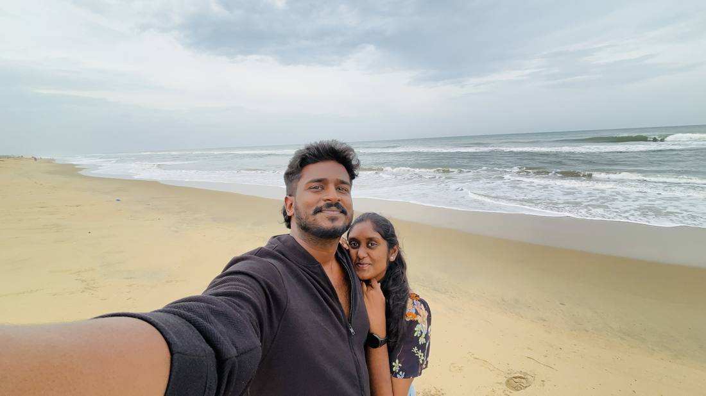
>07 / 10Oorula Vishesham — A Day In My Town
"Namma rendu perum dhaan irundha maari."
She'd passed through Coimbatore before, but never for me — this was the first time. I picked her up like a nervous kid on his first date, and the second I saw her, I forgot the road existed and just held her, right there, cars and all. We covered the whole town that day — malls, lakes, pani poori at the one stall I swore was the best in the city, watching her eat it like a delighted kid, which is somehow one of my favourite things about her. That night ended at the movies with "Little Hearts," a film that felt uncomfortably like watching our own story on screen, and a pub after with her friends where, for a few hours, the world outside didn't exist. Then a call came from home, and just like that, the night — and the visit — had to end. She cried the whole way to the drop-off. I didn't know yet that this kind of goodbye was about to become our new normal.
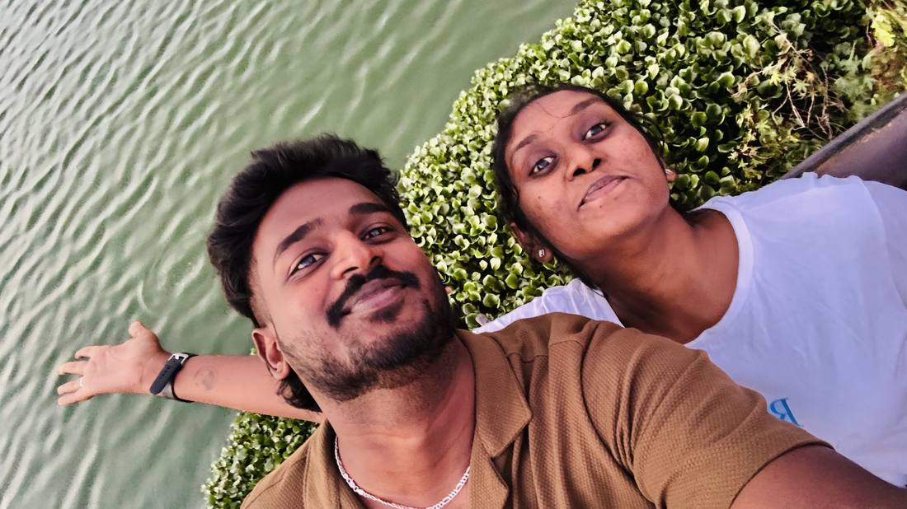
>08 / 10Mudhalum Kadasiyum — One Last Trip
"Un aasa dhaan mukkiyam."
One "last small trip" before I left, and of course it went sideways in the most us way possible. I booked the return ticket instead of the onward one, the refund only covered half, and the replacement seats were nowhere near each other. My back gave out somewhere around hour six of sitting wrong, and we went straight from the station to a hospital instead of the hotel. Somewhere in all that chaos, we still found a rooftop bar in the rain, a pizza place she'd been wanting to try, and Koramangala at night with a bottle of JD between us. It wasn't the trip we planned. It might be the one I remember best.
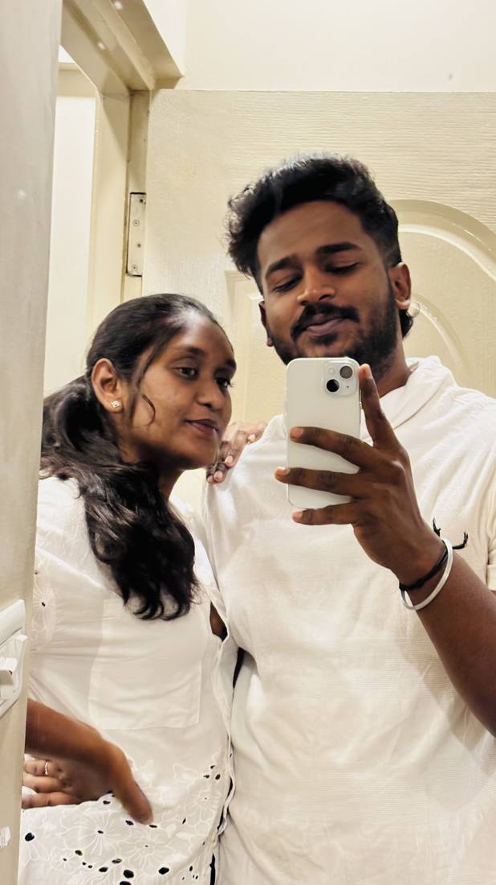
>09 / 10The Goodbye We Knew Was Coming
"Un azhugai... innum en kadhula dhaan irukku."
The local station, my train about to leave, and her standing there watching it happen. I tried to hold it together. I couldn't. Even as the train pulled away and she got smaller on the platform, I could still hear her crying — I can still hear it now, if I let myself. A few days later, my family reached Cochin a day ahead of my flight, and she came too, so we could steal one more evening before the airport. Two hours, mostly silent, mostly just holding on. I told my parents I was "going to look around the airport" and went to find her instead. That was the last time I saw her on Indian soil.
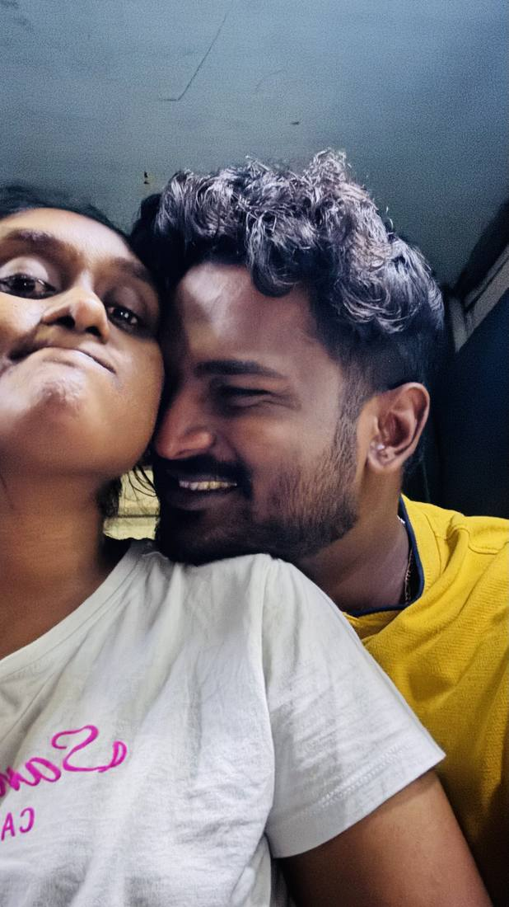
>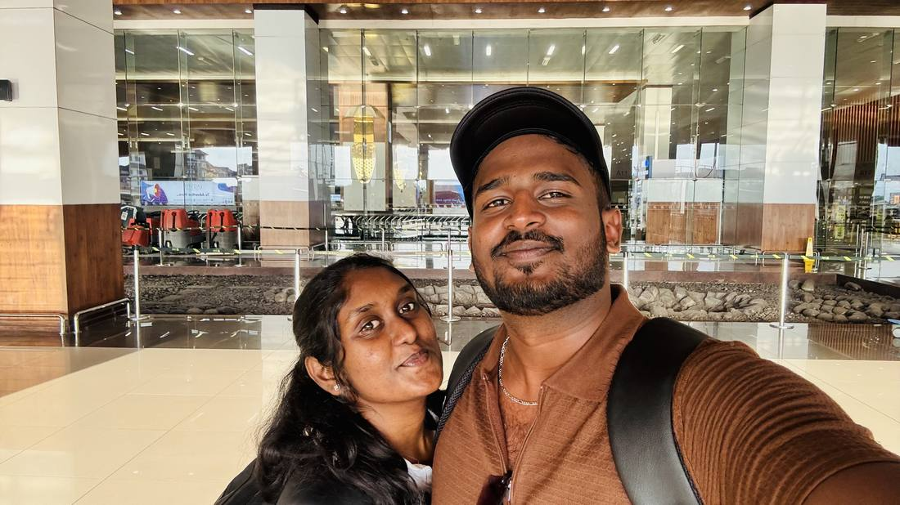
>10 / 10Endrum En Neelothi — Forever, My Untied Emotion
"En life... unkuda matum dhaan."
Two years of living in the same air as her, and then, all at once, a distance I couldn't reach across with my hand. New country, new life, and not nearly enough strength to face either one without thinking of her every second. There's a version of me that's still on that flight, still refusing to accept it's landed. But every hard day here comes back to the same truth: whether this is two years or twenty, my life is hers regardless of how many kilometres sit in between.
This December, I watched her blow out a candle on a video call instead of beside me — a birthday marked by a phone screen and a time-zone gap instead of a hug. It wasn't the celebration either of us wanted. But it was still ours, distance and all. Nive — this is for you. Not a perfect love story. Just ours.
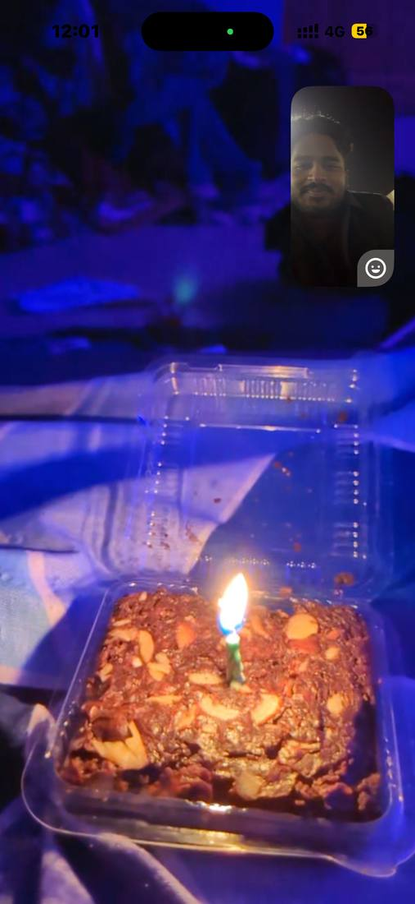
>